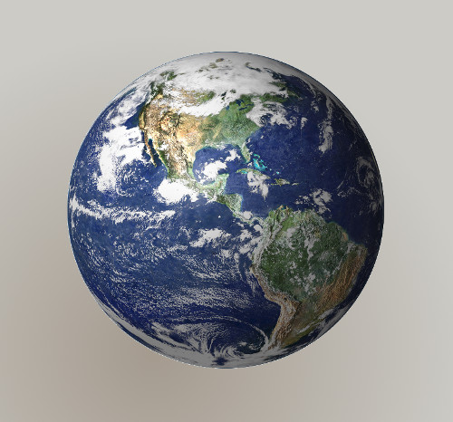

Geospatial analysis with Python¶
Valencia - PyConES 2015 - 2015/11/22
- Pedro-Juan Ferrer @vehrka
- Jorge Sanz - @xurxosanz
- Geoinquietos Valencia - @geoinquietosvlc
Slides and repo
GEO Problem?¶

You have to deal with data that has special rules.
Rules based on a reality not told in schools
Earth is not a sphere¶

Earth is more like a potato¶


Earth is not a sphere¶
Remember
The GEO information lays over something mathematical that has its own rules.
THE DATUM
Maps are flat¶

Breaking Flat¶
You have to choose what you want to break:
- Areas
- Angles
- Distances
In the best case you can choose two of the three.
(I'm skipping several courses on Cartography with this slide, trust me on this)
Maps are flat¶
Remember
The GEO information uses a mathematical trick to make things flat orderly.
THE PROJECTION
SRS and CRS¶
Toghether a DATUM and a PROJECTION make a CRS
The most famous catalog of CRS is EPSG
- EPSG:4326
- EPSG:3857 or EPSG:900913
- EPSG:4258
- EPSG:25830, EPSG:25831
Raster and Vector data¶


lon/lat vs lat/lon¶
There's a little bit of fuss
In theory it should be lon/lat (x,y)
But we are used to lat/lon
Always check things ... twice
Recap¶
- Know your Datum
- Know your Projection
- Know your Data Type
- Know your Model
KNOW YOUR (geo) DATA!!!
2. Writing and reading data¶
from fiona.collection import supported_drivers
for frmt in sorted(supported_drivers):
print("{:20}{}".format(frmt,supported_drivers[frmt]))
Exercise¶
- Import a CSV and write into a geospatial file
- Read that file and explore contents
- Report
Writing a shapefile from a CSV¶
- reading a CSV from CartoDB SQL API (querying this table)
- creating a schema
- creating features and writing them
select
ST_X(the_geom) as lon,
ST_Y(the_geom) as lat,
cartodb_id, actor_preferredusername, body, postedtime
from
jsanz.twitter_pycones_pycones2015_pycones15
import requests
url = 'https://jsanz.cartodb.com:443/api/v2/sql?q=select ST_X(the_geom) as lon, ST_Y(the_geom) as lat, cartodb_id, actor_preferredusername, body, postedtime from jsanz.twitter_pycones_pycones2015_pycones15&format=csv'
csv_file = '/tmp/tweets.csv'
with open(csv_file,'w') as csvfile:
req = requests.get(url)
csvfile.write(req.text)
target = '/tmp/tweets.shp'
epsg = 4258 # http://epsg.io/4258
driver = "ESRI Shapefile"
schema = {
"geometry": "Point",
"properties": {
("cartodb_id", "int"),
("lon","float"),
("lat","float"),
("author","str"),
("body","str"),
("postedtime","str")
}
}
import fiona, csv
from fiona.crs import from_epsg
output = fiona.open(target, "w", driver=driver,
crs=from_epsg(epsg), schema=schema)
with open(csv_file,'r') as csvfile:
csvreader = csv.reader(csvfile,delimiter=',',quotechar='"')
next(csvreader) #skip the header
for line in csvreader:
try:
x = float(line[0])
y = float(line[1])
feature = {
"geometry" : {
"coordinates" : (x, y), "type" : "Point"
},
"properties" : {
"cartodb_id" : int(line[2]),
"lon" : x,
"lat" : y,
"author" : line[3],
"body" : line[4],
"postedtime" : line[5]
}
}
output.write(feature)
except ValueError:
pass
try:
output.close()
except RuntimeError:
pass
Reading and exploring data¶
- Open a Shapefile
- Getting information of the resource
- Looping over features
source = fiona.open(target, 'r')
" ".join([atr for atr in dir(source) if atr[0] != '_'])
print("{} tweets\r\n".format(len(source)))
print("bounds: {}\r\n".format(source.bounds))
print("CRS: {}".format(source.crs))
print("{:3} - {:15} - {:^15}\r\n{:*^45}".format("ID","Author","Coords",""))
for f in source[:10]:
print("{:3} - {:15} - {}"
.format(f['properties']['cartodb_id'],
f['properties']['author'],
f['geometry']['coordinates']))
Displaying the imported data¶
import folium
basemap = r'http://{s}.basemaps.cartocdn.com/light_all/{z}/{x}/{y}.png'
map = folium.Map(location=[39.5,-2.5],
zoom_start=6, width=960, height=600,
tiles=basemap, attr='OpenStreetMap and Twitter')
for f in source:
x,y = f['geometry']['coordinates']
map.simple_marker(
[y,x], #lat/lon!!!
popup=f['properties']['body'])
map

3. Processing¶
Shapely¶
- http://toblerity.org/shapely/
- 2D geometry processing
- Pythonic wrapper for GEOS
- Agnostic of coordinate systems or data formats

Exercise¶
- Define a point at PyConES venue
- Create a buffer of a radius of 100 km around it
- Find tweets inside that buffer
- Report
Create a point¶
We can use the Well Known Text format to define a Shapely geometry.
from shapely.wkt import loads
pycones = loads("POINT (-0.346713 39.482767)")
pycones

" ".join([ atr for atr in dir(pycones) if atr[0] != '_'])
print('pycones {}\r\n'.format('is valid'
if pycones.is_valid else 'is not valid'))
print('WKT: {}\r\n'.format(pycones.wkt))
print('SVG: {}\r\n'.format(pycones.svg()))
Create a buffer¶
- We cannot create a buffer of 100km around a geodetic point
We need to compute the buffer on a projected CRS
- Project the point to UTM coordinates
- Compute the buffer
- Project the buffer to lat/lon coordinates
Shapely provides a method to allow using pyproj with any geometry
import pyproj
from functools import partial
project = partial(
pyproj.transform,
pyproj.Proj(init='epsg:4258'),
pyproj.Proj(init='epsg:25830')
)
project_inv = partial(
pyproj.transform,
pyproj.Proj(init='epsg:25830'),
pyproj.Proj(init='epsg:4326')
)
import shapely.ops
pycones_25830 = shapely.ops.transform(project,pycones)
print(pycones_25830)
Once projected we are ready to define a Shapely Point object, compute the buffer and project it back to lon/lat coordinates
from shapely.geometry import Point
p = Point(pycones_25830)
pycones_buffer_25830 = p.buffer(100000)
pycones_buffer = shapely.ops.transform(project_inv,pycones_buffer_25830)
pycones_buffer.bounds
Intersect tweets¶
All ready to read the Shapefile, check if every feature is intersected by the buffer and fill a list of tuples with the distance and the tweet.
import fiona
from shapely.geometry import shape
tweets = []
with fiona.open('/tmp/tweets.shp','r') as source:
for f in source:
geometry = shape(f['geometry'])
if pycones_buffer.intersects(geometry):
geometry_25830 = shapely.ops.transform(project,geometry)
distance = geometry_25830.distance(pycones_25830)
tweets.append((distance,f))
print("{} tweets at less than 100km".format(len(tweets)))
WARNING: We need to transform to projected coordinates to get a distance in meters!
Let's sort the results and print the closest 10 tweets to PyConES venue
tweets = sorted(tweets, key=lambda tweet: tweet[0])
print("{:17} - {:>10} - {:>4}\r\n{:*^37}".format("Author","Distance","ID",""))
for distance,tweet in tweets[:10]:
print("{:17} - {:10.2f} - {:4}"
.format(tweet['properties']['author'],
distance,tweet['properties']['cartodb_id']))
Displaying results¶
Let's use again folium but rendering also the buffer and with different colour for tweets inside.
basemap = r'http://{s}.basemaps.cartocdn.com/light_all/{z}/{x}/{y}.png'
map = folium.Map(location=[39.5,-2.5],
zoom_start=6, width=960, height=600,
tiles=basemap, attr='OpenStreetMap and Twitter')
buffer_coords = [ [lat,lon] for lon,lat in pycones_buffer.boundary.coords]
map.line(locations= buffer_coords)
with fiona.open('/tmp/tweets.shp','r') as source:
for f in source:
geometry = shape(f['geometry'])
color = 'red' if pycones_buffer.intersects(geometry) else 'blue'
x,y = f['geometry']['coordinates']
map.simple_marker([y,x], marker_color=color,
popup=f['properties']['body'])
map

Other libraries¶
From major Open Source desktop GIS projects:
That's all folks!¶
Thanks! Questions?¶
- Pedro-Juan Ferrer @vehrka
- Jorge Sanz - @xurxosanz
- Geoinquietos Valencia - @geoinquietosvlc
Slides and repo